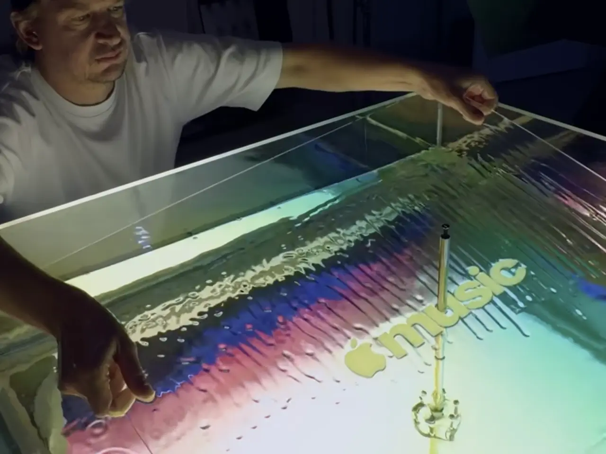

for DC Advanced UX Team.Vivi · Yohan · Libby · Lim Jisu · Katey · Anna
Back Issue

Visual
Apple Music: a note bent in mineral oil
Apple Music's first new mark since 2015 was filmed in a shallow bath of mineral oil, not drawn. Fred again.. and NEST Acoustics wrote a short piece; each note went through a transducer, and Joe Jackson shot the ripples. Notes pitched too high made the mark unreadable, so sound and picture were tuned together for months. The wordmark is a bold lowercase SF Pro, with Plau on the type, and the same composition is the sonic logo. The icon turns black and white in iOS 27.2.
애플 뮤직의 2015년 이후 첫 새 마크는 그려진 것이 아니라 미네랄 오일 수조에서 촬영됐다. Fred again..과 NEST Acoustics가 짧은 곡을 썼고, 음 하나하나를 트랜스듀서에 통과시킨 뒤 Joe Jackson이 물결을 찍었다. 음이 너무 높으면 마크가 읽히지 않아, 소리와 화면을 몇 달에 걸쳐 함께 맞췄다. 워드마크는 굵은 소문자 SF Pro이고 Plau가 타입을 맡았으며, 같은 곡이 소닉 로고다. 아이콘은 iOS 27.2에서 흑백이 된다.
Aegis Rider's spectacles clip magnetically behind the visor of a Nexx X.WST3. A chin camera and inertial sensors keep navigation, speed and warnings anchored to the road, so a look over the shoulder does not drag the graphics along. Arrows can sit in 3D at the junction or drop to a simpler mode. Setup is a ten-minute ride: five left turns, five right, then 45 seconds straight, stored for up to five bikes. The display is fixed to the motorcycle, not the rider's eyes.
이지스 라이더의 안경은 Nexx X.WST3 바이저 뒤에 자석으로 붙는다. 턱 카메라와 관성 센서가 내비게이션, 속도, 경고를 노면에 고정해, 어깨 너머를 봐도 그래픽이 따라오지 않는다. 화살표는 교차로에 3D로 두거나 단순한 모드로 줄일 수 있다. 설정은 10분 주행이다. 좌회전 다섯 번, 우회전 다섯 번, 직선 45초이며, 바이크는 다섯 대까지 저장한다. 화면은 눈이 아니라 모터사이클에 고정된다.
Canva Craft generates an image in two passes: it plans the layout, then draws it, which is how type stays legible and objects stay where you put them. Output goes to 2K and more than 30 aspect ratios, from a post to a scene. The model was trained on millions of human-made templates already on Canva, including menus, decks and infographics. It sits fourth on Design Arena, behind three OpenAI image models, and is live in Dream Lab for every user.
캔바 크래프트는 두 단계로 이미지를 만든다. 먼저 레이아웃을 계획하고, 그다음 그린다. 그래서 글자가 읽히고 오브젝트는 둔 자리에 남는다. 출력은 2K까지, 화면비는 30종이 넘으며 게시물에서 장면까지 간다. 모델은 캔바에 있는 수백만 개의 사람 만든 템플릿으로 학습했다. 디자인 아레나 4위이고, 앞은 오픈AI 이미지 모델 세 개다. 모든 사용자가 드림 랩에서 쓸 수 있다.
FutureDeluxe's welcome film for Verizon's London hub borrows the zoom of the Eames Powers of Ten. Marcus Chaloner treats the network as biomimicry, from the micro scale to the kiloscale: through a body, past organic infrastructure, and out to computational monoliths and flowing data. The minute runs at 4K and 60 fps, which was hard because so much of the frame is refractive. Sound is by Echoic Audio. It is a scale lesson for any cluster that has to show both a part and the whole system.
퓨처디럭스가 버라이즌 런던 허브를 위해 만든 웰컴 필름은 임스 부부의 파워스 오브 텐에서 줌을 빌렸다. 마커스 챌로너는 네트워크를 생체모방으로 다루고, 미시에서 킬로 스케일까지 간다. 몸속을 지나 유기적 인프라를 거쳐 연산 모놀리스와 흐르는 데이터로 나간다. 1분이 4K, 60fps이고, 프레임의 상당수가 굴절 재질이라 어려웠다. 사운드는 에코익 오디오다. 부품과 시스템 전체를 함께 보여야 하는 클러스터가 가져갈 스케일 수업이다.
Lufthansa Systems designs Lido Pilot Apps for cockpit iPads, used daily by more than 100,000 pilots. The map has to carry airways, weather and traffic without turning into noise. In Figma Make, Pankaj Juvekar pasted the top bar, bottom bar and layer icons onto a Mapbox base, then kept OpenSky markers inside 500 nautical miles. FAA weight classes size the icons, so an Embraer 195 reads smaller than a Boeing 737. Runway traffic changes colour at takeoff, before anyone opens SwiftUI.
汉莎系统的Lido Pilot Apps跑在驾驶舱iPad上，每天超过10万名飞行员在用。地图要装下航路、天气和交通，又不能变成噪音。在Figma Make里，Pankaj Juvekar把顶栏、底栏和图标贴到Mapbox上，OpenSky标记只留在500海里内。FAA重量等级决定图标大小，Embraer 195比Boeing 737小。跑道交通在起飞时变色。
루프트한자 시스템의 리도 파일럿 앱은 조종석 아이패드에서 돌고, 매일 10만 명이 넘는 조종사가 쓴다. 지도는 항로와 기상, 트래픽을 담되 복잡해지면 안 된다. 피그마 메이크에서 판카지 주베카르는 상단 바, 하단 바, 아이콘을 맵박스에 붙이고 오픈스카이 마커를 500해리 안에 남겼다. FAA 중량 등급이 크기를 정해 Embraer 195가 Boeing 737보다 작다. 활주로 트래픽은 이륙하는 순간 색이 바뀐다.
For The Alters: Last Variable, 11 bit studios dressed the same levels twice: scorched, then overgrown. Artem Ostapchuk's foliage is opaque Nanite mesh. Each leaf is cutout geometry, faster in benchmarks than masked shaders. Wind is a World Position Offset driven by vertex colour. Blender and ZBrush build the plants, Substance paints them, and HISM plus PCG scatter both states. The growth reads as coral and moss on dead trees.
《The Alters: Last Variable》里，11 bit studios把同一关卡做两遍：焦土，然后长满。Artem Ostapchuk的植被是不透明Nanite，每片叶子都是挖空几何，比遮罩着色器更快。风是顶点色驱动的World Position Offset。Blender和ZBrush做植物，Substance上色，HISM加PCG撒两种状态。长出来的是死树上的珊瑚和苔藓。
더 알터스: 라스트 베리에이블에서 11 bit studios는 같은 레벨을 두 번 입힌다. 불탄 땅, 그다음 무성한 상태다. 아르템 오스타프추크의 식생은 불투명 나나이트이고, 잎은 컷아웃 지오메트리라 마스크 셰이더보다 빨랐다. 바람은 버텍스 컬러의 월드 포지션 오프셋이다. 블렌더와 지브러시가 식물을 만들고 섭스턴스가 칠하며, HISM과 PCG가 두 상태를 흩뿌린다. 성장은 죽은 나무 위의 산호와 이끼다.
Ordinary Folk's Distance is 900 hand-painted frames about Samuel Finley Breese Morse: the years as a painter, then the code. It began in 2020 and follows an episode of Nate DiMeo's The Memory Palace. Jorge R. Canedo E. and Avikali Lomavatu led the picture; Ambrose Yu did the music. The motion is paint accumulating, slower than the studio's flat-colour Rio 40°. One medium, held until the message appears.
오디너리 포크의 디스턴스는 새뮤얼 핀리 브리즈 모스를 그린 손그림 900프레임이다. 화가였던 세월, 그다음 부호다. 2020년에 시작해 네이트 디메오의 더 메모리 팰리스 한 편을 따른다. 그림은 호르헤 R. 카네도 E.와 아비칼리 로마바투, 음악은 앰브로즈 유다. 움직임은 물감이 쌓이는 쪽이고, 플랫 컬러 리오 40°보다 느리다.
RevisionX is a double-DIN head unit from an Australian 180SX build, still unfinished. Screen out, you get square Apple CarPlay or Android Auto, a volume knob, two USB-A ports and an aux jack. A small display underneath can hold a picture of the car. Fold the motorized panel down and a working equalizer appears: sliders, plus a level meter that moves with the track. The EQ and the knob can swap places, and the unit can shrink to single-DIN. The screen is there, then it is gone.
리비전X는 호주 180SX 빌드의 더블 DIN 헤드유닛이고, 아직 완성 전이다. 화면을 내밀면 정사각 애플 카플레이 또는 안드로이드 오토, 볼륨 노브, USB-A 두 개, aux가 있다. 전동 패널을 접으면 이퀄라이저가 나온다. 슬라이더와, 곡을 따라 움직이는 레벨 미터다. 이퀄라이저와 노브의 자리를 바꿀 수 있고, 유닛은 싱글 DIN으로 줄일 수 있다. 화면이 있다가 없어진다.
N-Dream's AirConsole makes the infotainment display the playfield and the phone the controller. A QR code pairs them. No extra hardware. It is already in more than five million vehicles from BMW, MINI, Volkswagen, Audi, Porsche, Škoda and Tata. On the Zeekr 7GT, PAC-MAN Championship Edition runs on the car display and the ambient light follows the game. Selected European Zeekrs get the update before the end of 2026. The part to steal is the lighting locked to the sprite.
N-드림의 에어콘솔은 인포테인먼트 화면을 놀이판으로, 휴대폰을 컨트롤러로 쓴다. QR로 연결하고 추가 하드웨어는 없다. 이미 BMW, MINI, 폭스바겐, 아우디, 포르쉐, 스코다, 타타 차량 500만 대 이상에 있다. 지커 7GT에서는 PAC-MAN 챔피언십 에디션이 차 화면에서 돌고, 앰비언트 라이트가 게임을 따른다. 일부 유럽 지커는 2026년 말 전에 받는다. 가져갈 부분은 스프라이트에 잠긴 조명이다.
Hayden Clay Williams rebuilds throwaway objects in stained glass. Egg Carton (Six Wells) is turquoise, amber and pink panels with silver solder, so sunlight breaks into patches on the table. The traffic cone keeps the taper and the square base, in amber and copper, with small diamond inserts. The wet-floor sign is golden glass, hinge still working, the slipping figure made of separate pieces. That one took about three weeks, lead-free solder and a zinc frame. Glass makes the warning itself fragile.
헤이든 클레이 윌리엄스는 버려지는 물건을 스테인드글라스로 다시 만든다. 에그 카톤(식스 웰스)은 청록, 호박색, 분홍을 은색 땜으로 잇고, 햇빛이 테이블 위에 색으로 깨진다. 트래픽 콘은 테이퍼와 사각 받침을 호박색과 구리색으로 유지한다. 미끄럼 주의 표지는 금색 유리이고 경첩이 움직이며, 미끄러지는 사람은 조각 유리다. 한 점에 약 3주, 무연 땜과 아연 프레임이다. 유리는 경고 자체를 깨지기 쉽게 만든다.
Pranav Pradi rebuilt a Houdini paper-line study in Blender. The reference, by Aidiniotisv, used Vellum and COPs so strips of paper follow a pen. Pradi translated that node logic into Geometry Nodes, which they call a mini Houdini, and kept the rule: the line is generated, not drawn frame by frame. 80 Level posted the breakdown on 21 October. It is a small motion system with one input, the pen, and a material that remembers the path. A screen can run that as an idle state without a timeline.
프라나브 프라디는 후디니의 종이선 스터디를 블렌더에서 다시 만들었다. 원작은 아이디니오티스브가 벨럼과 COP로 종이 띠가 펜을 따르게 한 것이다. 프라디는 그 노드 논리를 Geometry Nodes로 옮겼고, 이를 미니 후디니라 불렀다. 선은 생성되고, 프레임마다 그려지지 않는다. 80 레벨이 10월 21일에 분해를 올렸다. 입력은 펜 하나이고, 재료가 경로를 기억하는 작은 모션 시스템이다. 화면은 타임라인 없이 이것을 대기 상태로 돌릴 수 있다.
Figma's note on 22 October is about feeding the agent a design system, not prompting a blank frame. Connect a published library and it should reach for approved components and variables. An order-summary card can come back as Card/OrderSummary/Default, with the named button variant and spacing tokens. @-mention a component when you want that exact one. If the same mistake repeats, fix the library, not the prompt. The agent is only as specific as the system you hand it.
피그마가 10월 22일에 적은 글은 빈 프레임에 프롬프트를 던지는 일이 아니라, 디자인 시스템을 에이전트에 먹이는 일이다. 퍼블리시된 라이브러리를 연결하면 승인된 컴포넌트와 변수를 집는다. 주문 요약은 Card/OrderSummary/Default로 돌아올 수 있고, 이름 붙인 버튼과 간격 토큰을 쓴다. 그 컴포넌트는 @로 짚는다. 같은 실수가 반복되면 고칠 곳은 라이브러리다. 에이전트는 건넨 시스템만큼만 구체적이다.
Bandit9's (RED)800 is nine motorcycles, each with a hand-sculpted aluminum body and no panel seams. A hand-painted gradient runs from Racing Red into raw brushed aluminum, so no two surfaces match. Under the shell is an 821 cc Ducati Testastretta L-twin, 110 hp, with the mechanical parts left partly visible. Daryl Villanueva's studio built it with (RED). Lead time is eight to twelve months. The riding position is low, bars dropped, feet rear-set. The graphic is the fade: paint that ends by showing the metal.
밴딧9의 (RED)800은 아홉 대다. 각각 손으로 빚은 알루미늄 차체이고 패널 이음은 없다. 그라데이션이 레이싱 레드에서 브러시드 알루미늄으로 넘어가, 표면이 같은 두 대는 없다. 아래는 821cc 두카티 테스타스트레타, 110마력이고 기계는 일부 드러난다. 다릴 빌라누에바가 (RED)와 만들었고, 8개월에서 12개월이 걸린다. 그래픽은 그 페이드다. 페인트가 멈추는 곳에서 금속이 나온다.
The Leica Q3 43 Formula 1 Edition keeps the 60-megapixel sensor and the fixed APO-Summicron 43mm f/2. What changes is the skin. Black Microvelour copies the texture of a Formula 1 steering wheel. Carbon fibre, made in Germany, covers the wireless-charging handgrip, the thumb rest and the soft shutter. Red marks the shutter and one function button, the way a race wheel colour-codes its controls. A Formula 1 Look in the FOTOS app raises contrast and can be previewed in the viewfinder. Grip, thumb, one red button.
徕卡Q3 43 Formula 1 Edition保留6000万像素和固定的APO-Summicron 43mm f/2。变的是外皮。黑色Microvelour仿一级方程式方向盘的触感。德国产的碳纤维盖住无线充电手柄、拇指靠和软快门。红色标在快门和一个功能键上。FOTOS里的Formula 1 Look提高对比，取景器里就能预览。握把、拇指、一颗红键。
라이카 Q3 43 포뮬러 1 에디션은 6000만 화소 센서와 고정 APO-Summicron 43mm f/2를 그대로 둔다. 바뀌는 것은 껍질이다. 검은 Microvelour는 포뮬러 1 스티어링 휠의 질감이다. 독일산 카본이 무선 충전 그립, 엄지 받침대, 소프트 셔터를 덮는다. 빨강은 셔터와 기능 버튼 하나에 찍힌다. FOTOS의 포뮬러 1 룩은 대비를 올리고, 뷰파인더에서 미리 볼 수 있다. 그립, 엄지, 빨간 버튼 하나.
Iris van Herpen recorded the vineyards at Ambonnay and Cramant, then used cymatics to turn those vibrations into patterns. Symphonic Bloom is silk and recycled 22-carat gold rising off a jeroboam of Perrier-Jouët Belle Époque 1988. Symphonic Life wraps ten magnums of the 1999 in the same gold. With Séverine Frerson she also redrew the Belle Époque 2018 bottle from metal, wood, silk and velvet. The pieces were at The Peninsula Paris on 21 October. Make the sound visible, then build from the wave.
Iris van Herpen在Ambonnay和Cramant录音，再用音流学把振动变成图案。Symphonic Bloom是丝绸和回收的22-carat金，从Perrier-Jouët Belle Époque 1988的杰罗波姆上升起。Symphonic Life用同样的金裹住十瓶1999玛农。作品10月21日在巴黎半岛酒店。让声音可见，再顺着波建造。
이리스 반 헤르펜은 앙보네와 크라망의 포도밭을 녹음한 뒤, 사이매틱스로 진동을 패턴으로 바꿨다. 심포닉 블룸은 실크와 재활용 22-carat 금으로, Perrier-Jouët Belle Époque 1988 제로봄 위에서 솟는다. 심포닉 라이프는 1999년 매그넘 열 병을 같은 금으로 감싼다. 세브린 프레르송과 Belle Époque 2018 병을 다시 그렸다. 작품은 10월 21일 파리 페닌슐라에 있었다. 소리를 보이게 하고, 파동으로 짓는다.
SEA's 30th-anniversary book is a 304-page hardback, silver-edged, limited to 300 numbered copies. The studio designed and edited it, TEAM printed it, Diamond bound it, and the paper is G.F. Smith. Not one of the studio's marks has been redesigned. The longest client relationships run 26 and 27 years, and the team has stayed at about 12 to 15 people. An identity that was allowed to stay put.
SEA의 30주년 책은 304쪽 하드커버이고, 은색 가장자리에 300부 번호 한정이다. 스튜디오가 디자인하고 편집했으며, TEAM이 인쇄하고 Diamond가 제본했고, 종이는 G.F. Smith다. 다시 그려진 마크는 없다. 가장 긴 클라이언트 관계는 26년과 27년이고, 팀은 약 12명에서 15명이다. 그 자리에 머물도록 허용된 아이덴티티다.